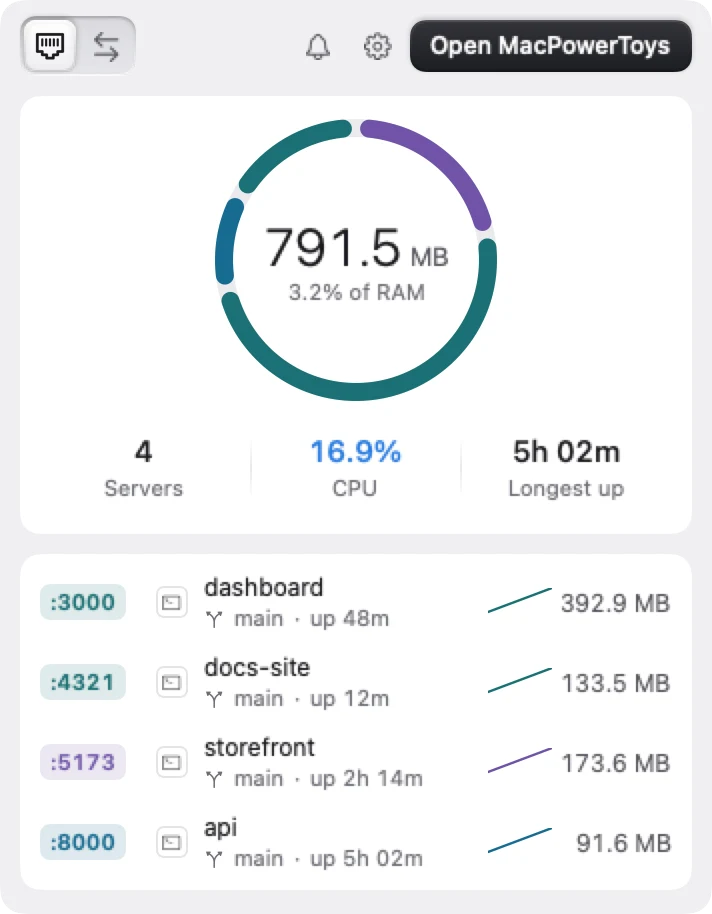
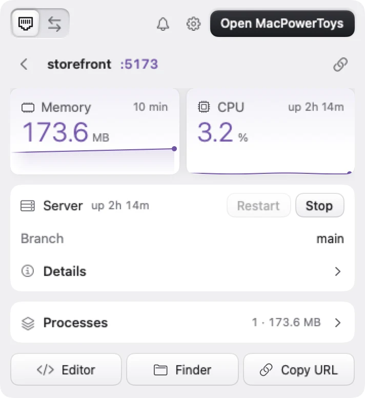
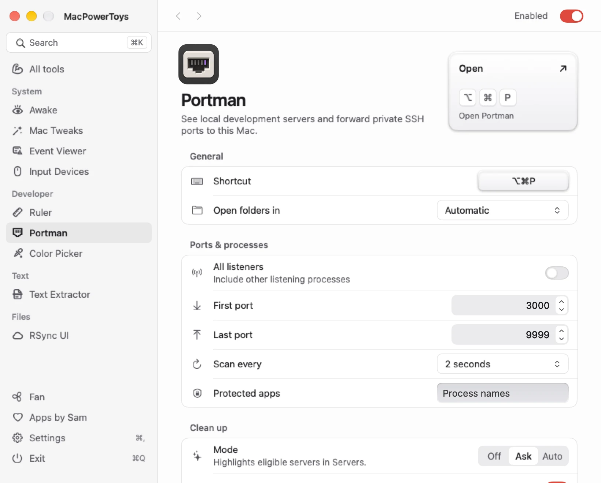
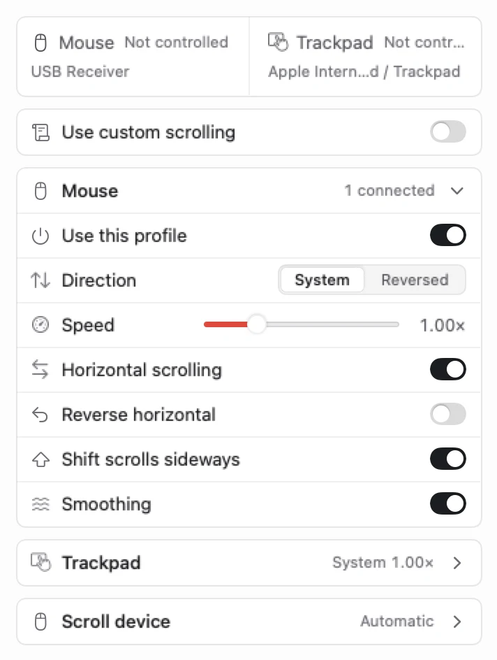
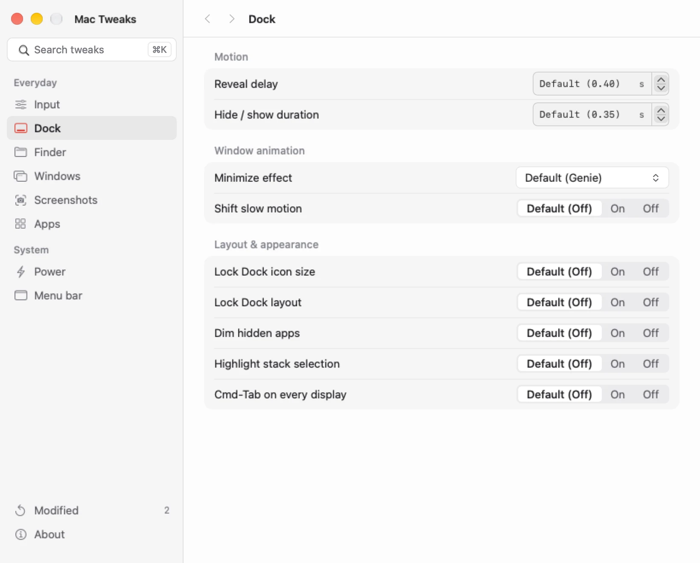
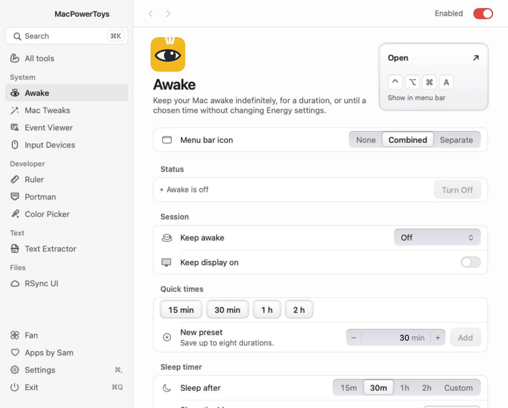
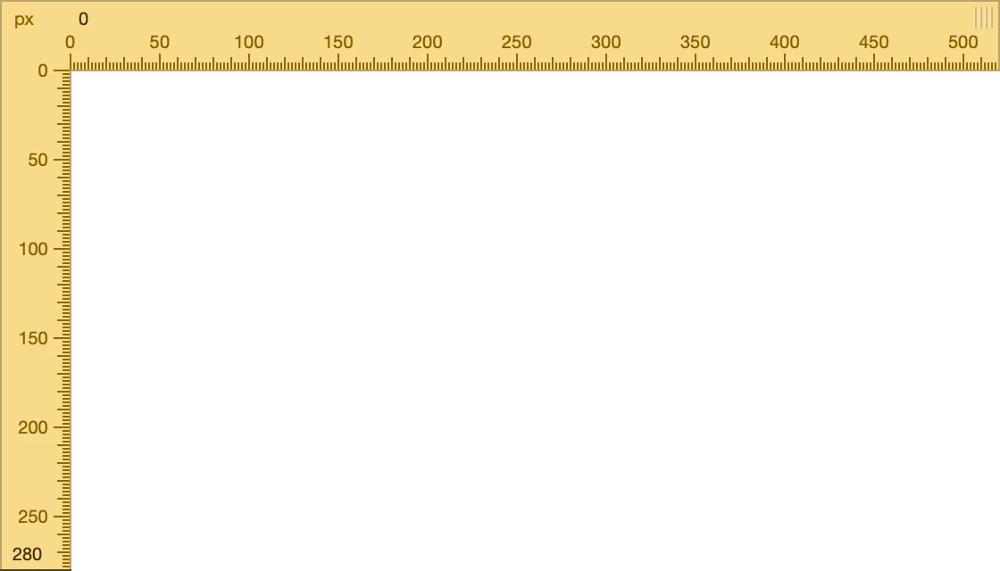
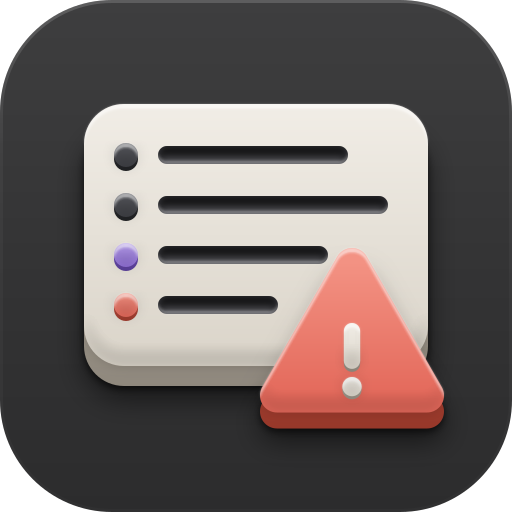

Your menu bar, doing more.
One menu bar panel for stats and fans, plus nine tools.
brew install --cask samhqapp/tap/macpowertoysVersion 1.9.4 · macOS 26.2 or later · Notarized by Apple




Every dev server, in one list.
Each server shows its project, branch, uptime, and memory.
Open one to see what it uses.
Live graphs, with Restart, Stop, and Copy URL one click away.
Postgres stays closed. You still get in.
Portman brings a closed remote port to localhost over SSH.
This Maclocalhost:5432SSH on port 22build-box:5432
Set it up once.
Pick ports, scan speed, and apps it must never stop.



Five small tools.
Each opens from the panel or a shortcut, and quits cleanly.

Color Picker
Copy any pixel as HEX, RGB, SwiftUI, and more.

Text Extractor
Box any text on screen, and it lands on your clipboard.

Event Viewer
App activity and macOS errors, filtered by level.

Awake
Keep the Mac awake for 30 minutes, or until you stop.

Ruler
Measure anything on screen in pixels, millimeters, or inches.

 RulerMeasure anything on screen.
RulerMeasure anything on screen. Color PickerCopy any pixel in 9 formats.
Color PickerCopy any pixel in 9 formats. Text ExtractorCopy text from the screen.
Text ExtractorCopy text from the screen.- AwakeKeep the Mac awake.
 Input DevicesScroll settings per device.
Input DevicesScroll settings per device. PortmanDev servers and SSH ports.
PortmanDev servers and SSH ports. RSync UICloud copies with rclone.
RSync UICloud copies with rclone.
Event ViewerApp logs and macOS errors. Mac TweaksHidden macOS settings.
Mac TweaksHidden macOS settings.
Install it in one line.
brew install --cask samhqapp/tap/macpowertoysVersion 1.9.4 · macOS 26.2 or later · Notarized by Apple · No tracking · MIT license